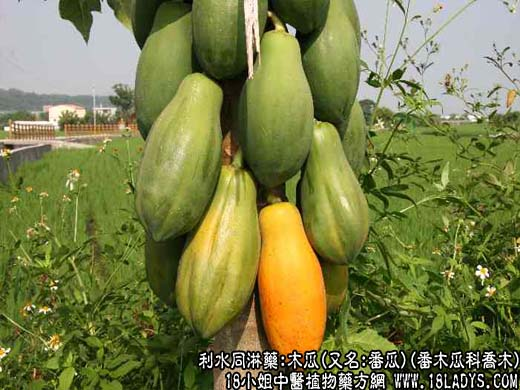

【中药概述】
木瓜，又名:番瓜、万寿果、木梨、铁脚梨、文冠果、木冬瓜、乳瓜、蓬生果，番木瓜科乔木，属利水同淋药。
【木瓜_木瓜的功效与作用_木瓜图片_木瓜的吃法】
别名：土木瓜、万寿果、乳瓜。
植物名：番土瓜。
生长环境：本品为直立、软木质小乔木，栽培于土壤肥沃、排水佳良的地方。
分布：原产热带美洲，广州附近普遍栽培。
入药部分：根部。
采集期：全年采根，春、夏、秋采果。
自采地点：家种。
性味：性凉、味淡。
功能：祛湿、利尿。
主治、用量和用法：花柳白浊：鲜根2至4两，或干根1至2两，清水煎服或加猪瘦肉同煎。
附录：（果）1、催乳，配伍用；2、治肺燥咳：熟木瓜一个，蜜糖适量，炖一小时服食。
验方：（催乳方）未熟木瓜果4两，鱼尾一条（约3～4两，以鱿鱼为佳），生姜1钱，清水四碗，煎成一碗服食。
（方解）木瓜为通血脉滋养脾肺之品，用米熟之果实，其药力更大。佐以鱼尾肉有情之品以补不足，具有化气成形之妙。民间用此方通知乳甚效。
（方歌）木瓜炖糖润肺食金，燥咳声嘶入露甘，去糖改煲鱿鱼尾，妇人服此乳漓淋。